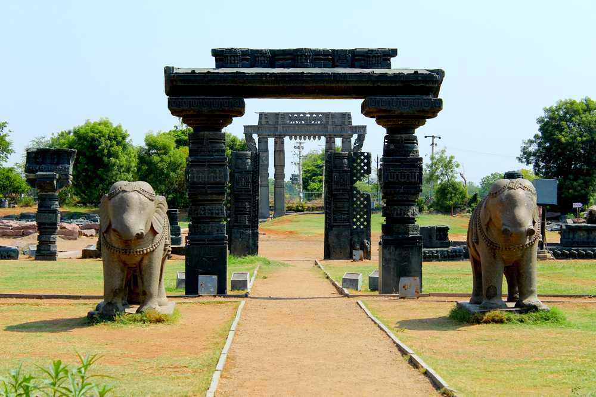
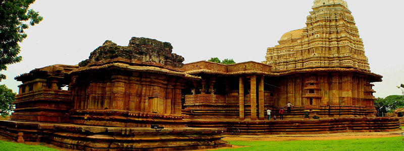
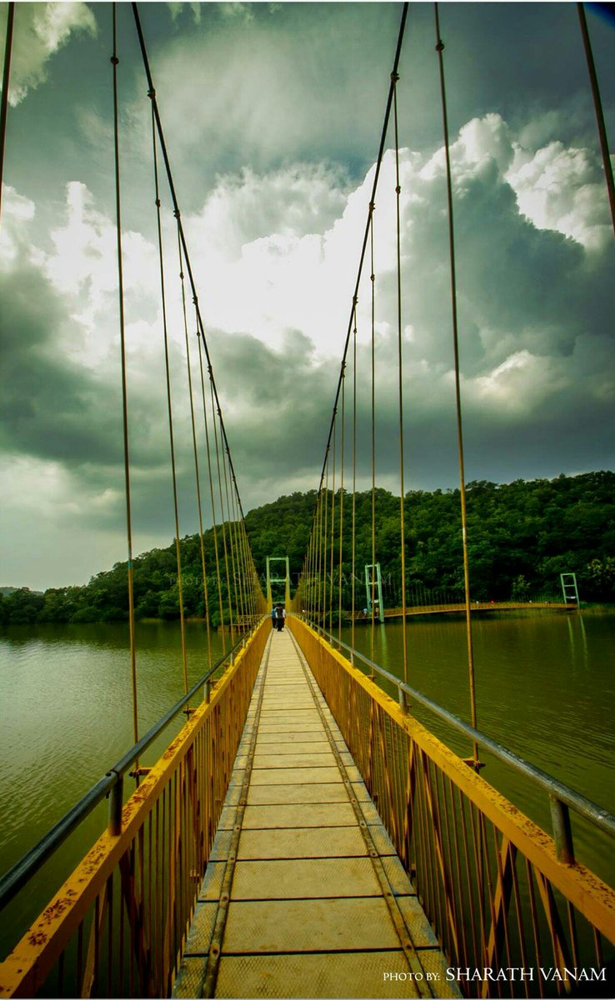
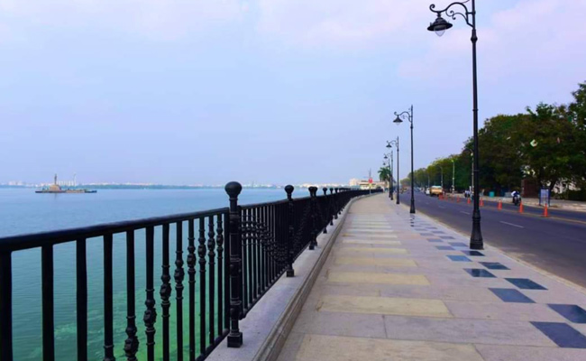

Latest Post
Explore the enthralling destinations of #Telangana

Warangal is recognized as one of the best heritage cities of India. It is 145 km away from the state capital Hyderabad. It is also the second largest city in the state of Telangana.
Read More

Warangal in the Deccan plateau is home to the very classic and brilliant Kakatiya art.The Ramalingeswara Temple which is popularly known as the Ramappa temple is one such amazing piece of art that stands as a testimony of the royal Kakatiyas.
Read More

Lakhnavaram Lake, located in Govindaraopet Mandal about 70 kilometers away from Warangal, is a trending picnic spot. The lake is an exceptional thing of beauty. The lake was formed by closing down three narrow valleys.
Read MoreCharminar is a monument and a mosque, which is synonymous with the history of Hyderabad, India. The majestic structure was completed in 1591 CE and is not only a landmark building of Hyderabad but also a famous monument of India.
Read More
Golconda Fort is located in the western part of Hyderabad city and is about 9 km from the Hussain Sagar Lake. The outer fort occupies an area of three square kilometers, which is 4.8 kilometers in length.
Read More
